Originally posted on CodeProject on 4 Mar 2020
The article tries to distill a deeper, more generic nature of REST architectural style not tied to web services.
Roy Fielding in his dissertation defined REST (Representational State Transfer) as an "architectural style for distributed hypermedia systems" defining it as Layered-Code-on-Demand-Client-Cache-Stateless-Server with Unified-Interface. The articles describing this style available on the Web always define REST in the context of "RESTful web services" where HTTP is used to manipulate a myriad of URL addressable resources. But after really giving it a thought, one realizes that RESTful web services are only an application of REST as an architectural style and the style itself has a deeper, simpler, hidden nature I’ll try to uncover here.
To uncover the hidden nature of the Representational State Transfer style, let’s dissect its name backward.
The word transfer implies that there are at least two processes communicating through some medium which implies a distributed system.
The word state means that one process of a distributed system transfers its internal "view of the (surrounding) world" to another process. This ‘internal view of the world" is all the relevant information required by the process to do its duty (see Figure 1). It contains both information gathered from the environment and the one generated internally and is expressed by nouns.
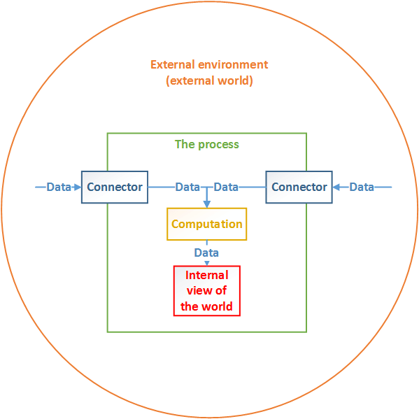
The word representational means that processes do not literally send their "internal views of the world" but encode them into descriptions (representations) understandable by recipients. Representation hides the internal nature (implementation) of the process's internal state.
A transfer of state differs from transferring commands as it does not imply any concrete behavior of a recipient. If the sender transfers commands (as in case of RPC), it is in charge of the recipient’s behavior, but if the sender transfers state, it merely signals what the current view of the world (it observes) is and lets the recipient perform any action it sees required (see Figure 2). This means that the sender assumes some reaction to the state being sent but does not demand concrete actions leaving this decision to the recipient. This results in a distribution of control between processes and loosening of coupling.
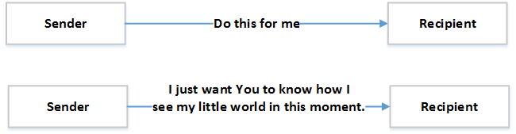
In order to achieve successful communication, a "view of the world" transferred needs to be complete from a recipient perspective. This means that every message needs to be self-contained, carrying enough information to be processed independently from any other message sent before or after. This, in turn, implies context-free interaction as no interaction context (like expected message sequence number) needs to be maintained by any communication process (I’ll use "context-free" instead of "stateless" to avoid confusion).
To clarify what has been said, let’s use an example of an electronically controlled valve connected to a SCADA system (Figure 3) through a communication link. The valve can be placed in any position between 0 (totally closed) or 100 (totally opened).
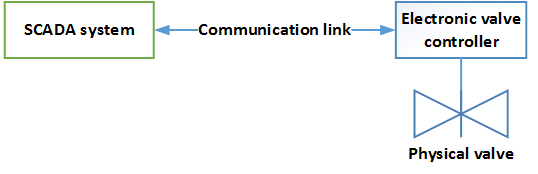
The electronic valve controller periodically sends a single byte message through the communication link (messages 1,3,4,5 on Figure 4) denoting the current valve position. It also accepts a single-byte message denoting a target valve position (messages 2 and 5 in Figure 4).
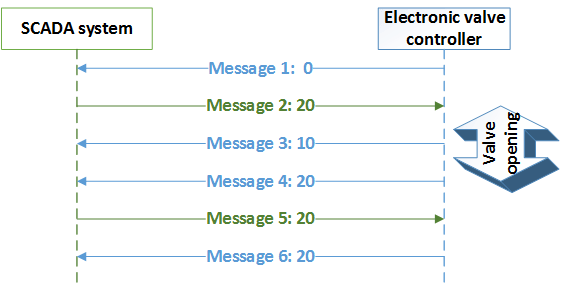
The single byte containing a valve position is a complete "internal view of the world" of the valve controller. When the controller sends the message, it does not assume any particular action from the SCADA system, it merely advertises its state. When the SCADA system sends the message, it does not assume any particular action either as the controller is free to undertake any action it sees feasible (though the SCADA system surely expects a physical valve to be in the desired position eventually). In Figure 4, the controller accepts the state it receives and moves the valve appropriately informing periodically about the new current position of a valve.
The RESTful style is equally applicable to request-response model depicted on Figure 5.
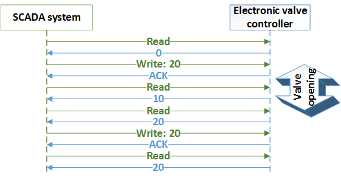
The most important implication of REST is that it is a valve controller’s duty to find out how to move from one state to another as the SCADA system does not have a clue. The SCADA system might be even blind enough not to process the messages received from the controller. It could merely send its own "inner view of the world" periodically (messages 2 and 5 on Figure 4) assuming that this is actually the only "true truth" and the controller needs to deal with this fact.
By contrast, Figure 6 shows the same processes communicating in an RPC style where the SCADA system is fully responsible for managing the controller’s internal state explicitly.
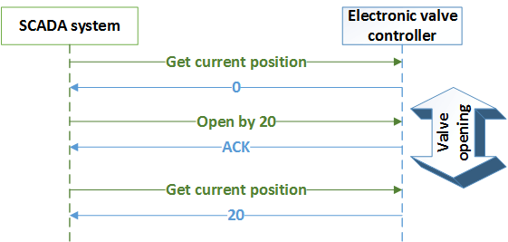
The example illustrates another two rules of REST. The first states, that reading or receiving state of another process is a safe operation which means that it does not trigger a change of the visible state of that process. A visible is state observable by any subsequent interaction with this process performed by system business logic. A safe operation may change an invisible state of a remote process by for example generating log entries. The second rule is that sending a state to a remote process is an idempotent operation which means that sending the same state more than once causes the same effect as if the state was sent exactly once (note that message 5 in Figure 4 causes no effect). This is in contrast with RPC style which does not impose such behavior. It is worth mentioning that all safe operations are idempotent by definition.
Summarizing what has been written so far, a RESTful protocol is composed of messages that transfer the complete state of a sender relevant to message recipient expressed as a mutually understandable representation and each message is processed by a recipient in a safe or idempotent manner. The advantage of such an approach, besides loose coupling, is the simplicity and efficiency of implementing transactional operations.
Transactional RPC style read is achieved when consecutive reads of parts of remote process’s state enclosed within one "conversation" return a coherent view of the state regardless of concurrent updates of this state. The common solution is to first start a transaction on a remote component by sending a dedicated message that causes it to take a snapshot of its internal state, then read the snapshot with a series of partial requests and finish the transition with two-phase or three-phase transaction commit in the end (see Figure 7 top). Such an approach imposes communication and resource overhead. The whole problem can be totally avoided if the whole relevant state is transferred within a single message (see Figure 7 bottom). In such a case, a classic locking or queuing mechanism is enough to efficiently serialize operations.
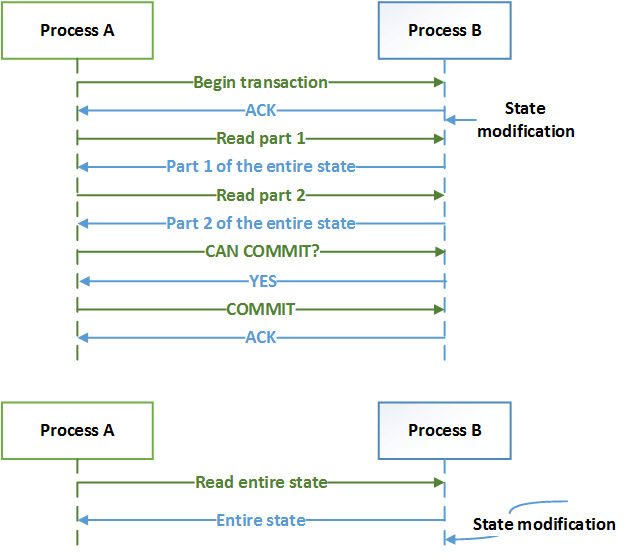
The same as with transactional read, an RPC style transactional write requires a chatty conversation with two-phase or three-phase transaction commit in the end (see Figure 8 top). On the contrary, a RESTful write transaction can be performed with a single request message (see Figure 8 bottom). When all relevant state is transferred within a single message, a locking or queuing mechanism is enough to efficiently serialize operations. Additionally, if the transaction fails for some reason (request message lost, acknowledgment lost, etc.), the sender can simply resend the message again because of the idempotent behavior of a recipient.
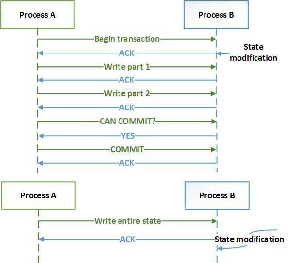
Sending the entire state within a single message is the simplest and preferable solution but often inefficient due to a large amount of data that needs to be sent over the wire. The inefficiency is especially noticeable when a modified portion of the state is small compared to a whole state. In order to deal with that, a state partitioning mechanism needs to be implemented. If chunks of the state are uniquely identifiable (eg. by name, or index), then only the changes to the state (patches) need to be transferred.
To illustrate this, let’s assume that our electronic valve controller controls not one but a thousand valves, and a SCADA system communicates with it in a request-response manner. The SCADA system sends a request containing valve numbers and the controller responses with a vector of <valve number, position> pairs. The controller also accepts a vector of pairs from SCADA system and sets the positions of specified valves accordingly (see Figure 9). This way, the SCADA system can read or write only positions of valves it is interested in.
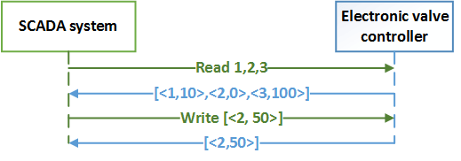
State patching may be transactional in the way that was described before. The only requirement is to transfer the complete set of patches within a single message to leverage the idempotence.
In the two "valve examples", only fixed-size states have been used, but the RESTful approach is also suitable for variable size state use cases. Figure 10 shows the message exchange between a PC and a music player. A PC first asks for entire player’s state containing three songs. Later, the PC sends it a new state (modified by user) with Song2 missing and Songs 4 and 5 extra. In response to that, the player adjusts its internal state to the one described by received representation by downloading songs 4 and 5 and deleting song 2.
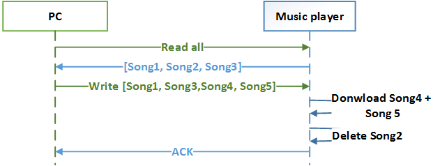
This example nicely illustrates the difference between an internal state of a process and a representation of this state. The internal state of a music player is a set of audio files but its representation is a set of song names.
The player example works fine if the song collection is small but if the number of songs grows to thousands, it may be inefficient to send the entire collection of titles there and back again every time. Instead of that, only the differences between PC’s and player’s state may be sent. Introduction of metadata describing the NEW, MODIFIED and MISSING songs solves the issue (see Figure 11). It is important to note that the NEW, MODIFIED and MISSING tags are adjectives describing "timeliness" of state chunks and not verbs ordering a recipient to add, update or delete.
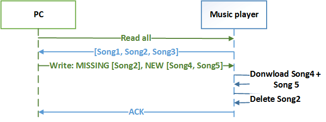
A PC sends a message describing differences of a music player’s state in a similar manner as the diff UNIX utility describes the set of modifications within a text file. The write message is self-contained and can be processed in an idempotent way.
To summarize, the core idea of REST is to transfer representations of "internal view of the world" given as nouns within self-contained messages in a conversation context-free manner so that they can be processed by a recipient in an idempotent manner with state patching expressed as adjectives as an optimization (see Figure 12). The advantages are distribution of control, loose coupling and simplified transaction processing comparing to RPC (which uses nouns for data and verbs for operations). The disadvantages of RESTful communication are (often) more bandwidth consumption and more burden placed on recipient, as is the recipient’s duty to deduct the proper sequence of actions to adapt form its current internal state to the new, expected one.
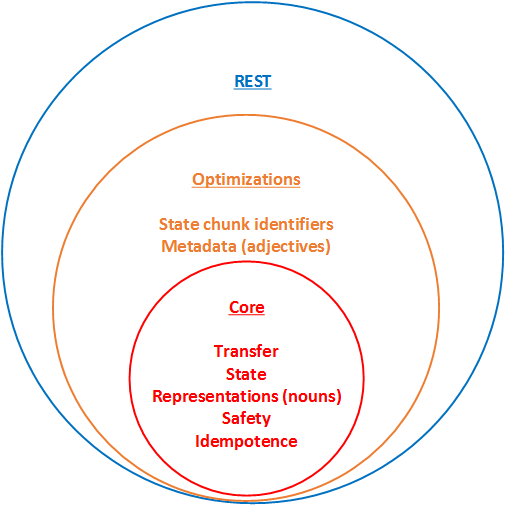
The most important conclusion of this text is that REST as an architectural style is not tied to the particular communication protocol. It can be realized for example at middleware level via the messaging service, at an application level via SNMP, at transport level via plain TCP or UDP or even at the physical layer via RS232. The most popular (and to be honest not very accurate) is the realization via HTTP protocol known as "restful web services". I let the reader map the concepts described within this article into the HTTP protocol.
NOTE: In the following article, Bare HTTP is Not Fully RESTful, I explain why bare HTTP protocol is not fully RESTful and show an example of a fully RESTful protocol.
Authored by Lukasz Bownik. Provided under Creative Commons Attribution 4.0 International License